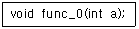
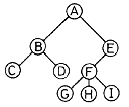
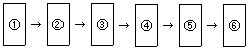
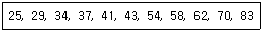
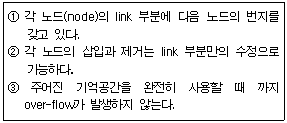
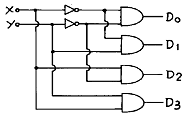
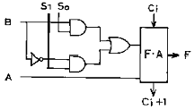
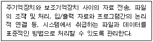
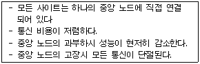
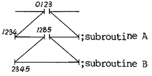

전자계산기조직응용기사 (2003-03-16 기출문제)
1과목: 전자계산기 프로그래밍
1. 의사연산 테이블(pseudo operation table)에 대한 설명으로 가장 적절한 것은?
- 가변 데이터베이스로서 패스-1에서만 참조한다.
- 고정 데이터베이스로서 패스-1에서만 참조한다.
- 고정 데이터베이스로서 패스-1, 패스-2에서 참조한다.
- 가변 데이터베이스로서 패스-1, 패스-2에서 참조한다.
(정답률: 82%)

2. C 언어에서 이스케이프 시퀀스의 설명이 옳지 않은 것은?
- \f : form feed
- \r : carriage return
- \b : back slash
- \t : tab
(정답률: 82%)
3. 주어진 BNF를 이용하여 그 대상을 근으로 하고 터미널 노드들이 검증하고자 하는 표현식과 같이 되는 트리를 무엇이라 하는가?
- sweked tree
- binary tree
- parse tree
- threaded binary tree
(정답률: 75%)
4. 어셈블리에서 의사 명령어 START 명령어의 기능은?
- 프로그램의 시작과 적재될 위치를 알려주는 기능
- 프로그램의 시작 시간을 알려주는 기능
- 프로그램이 시작되었다고 레지스터에 알려주는 기능
- 프로그램의 시작과 메모리의 상태를 알려주는 기능
(정답률: 53%)
5. PLC의 장점이 아닌 것은?
- 공정을 생략할 수 있고 기획성이 우수하다.
- 반도체와 IC를 이용한 제품이므로 제어반의 크기를 줄일 수 있다.
- 소규모 제어회로에서 가격이 싸다.
- 신뢰성 및 보수성이 높다.
(정답률: 67%)
6. 논리곱(AND)을 나타내는 C 언어의 연산자는?
- ||
- |
- &&
- &
(정답률: 70%)
7. 객체 지향에 관한 설명으로 옳지 않은 것은?
- 객체 지향의 특징은 추상화, 정보 은닉, 모듈화 등 이있다.
- 객체의 동작 지시는 메시지에 의해 수행된다.
- 객체 중심은 구조적 코딩 기능을 극대화 할 수 있다.
- 객체 중심에서는 재사용의 기능을 이용할 수 있다.
(정답률: 60%)
8. 어셈블리에서 상수에 이름을 부여하기 위해 사용하는 명령어는?
- EQU
- PTR
- MOV
- LEA
(정답률: 75%)
9. PLC의 기능에 대한 설명으로 옳지 않은 것은?
- 인터럽트 처리가 가능하다.
- BCD 데이터와 비교가 가능하다.
- 디지털 스위치의 수치를 읽을 수 있다.
- 아날로그 데이터는 입력만 가능하다.
(정답률: 72%)
10. 원시프로그램을 번역할 때 어셈블러에게 요구되는 동작을 지시하는 명령으로서 기계어로 번역되지 않는 명령어를 무엇이라 하는가?
- 매크로 명령(macro instruction)
- 기계어 명령(machine instruction)
- 의사 명령(pseudo instruction)
- 오퍼랜드 명령(operand instruction)
(정답률: 72%)
11. 한 위치의 문자열을 다른 위치의 문자열과 비교하는 어셈블리 명령어는?
- REPE
- CMPS
- SCAS
- MOVS
(정답률: 80%)
12. 객체지향 설계에서 처리되는 자료형과 처리 연산을 한 묶음으로 표현함으로써 자신의 자료에 대한 연산을 외부와 단절하는 개념을 무엇이라 하는가?
- class
- encapsulation
- polymorphism
- inheritance
(정답률: 71%)
13. C 언어의 기억 클래스가 아닌 것은?
- auto
- extern
- register
- void
(정답률: 60%)
14. C 언어에서 프로그램의 변수 선언을 "int c;"로 했을 경우에 "&c"는 어떤 의미인가?
- c의 절대값
- c에 저장된 값
- c의 기억장소 주소
- c의 범위
(정답률: 73%)
15. 데이터와 이 데이터를 조작하는 연산들이 하나의 모듈 내에서 결합되도록 하는 것을 무엇이라 하는가?
- 추상화
- 메소드
- 캡슐화
- 객체
(정답률: 81%)
16. C 언어에서 다음 함수의 선언문에 관한 설명으로 옳은 것은?

- 리턴되는 값이 반드시 정수형이어야 한다.
- 매개변수와 함수의 리턴형이 모두 정수형이다.
- 정수형 값을 전달받아 아무 값도 리턴하지 않는다.
- 정수형 값을 전달받아 임의의 형을 리턴한다.
(정답률: 80%)
17. C 언어에서 지정된 파일로부터 한 문자씩 읽어들이는 파일처리 함수는?
- fopen()
- fscanf()
- fgetc()
- fgets()
(정답률: 83%)
18. 프로그램이 실행될 때 세그먼트 레지스터가 가지는 주소 값을 어셈블러에게 알려주는 지시어는?
- CDSG
- PUBLIC
- ASSUME
- DEBUG
(정답률: 64%)
19. 다음 PLC 제어 방법 중 하나인 모든 시퀸스 프로그램을 프로그램 메모리(ROM or RAM)에 격납시켜 두고 이것을 차례대로 꺼내어 CPU가 실행시키는 방법을 무엇이라 하는가?
- Stored program
- Reliability
- Availability
- Throughtput
(정답률: 56%)
20. C 언어의 데이터 형이 아닌 것은?
- long
- integer
- char
- double
(정답률: 61%)
2과목: 자료구조 및 데이터통신
21. 다음 Tree의 디그리(Degree)는?

- 1
- 2
- 3
- 4
(정답률: 78%)
22. 직접화일에서 두개의 키값 K1 ≠ K2인데 계산된 함수의 결과가 R(K1) = R(K2)인 경우 K1과 K2를 무엇이라 하는가?
- fragment
- overflow
- collision
- synonyms
(정답률: 52%)
23. 패킷(packet) 교환과 관계가 없는 것은?
- 고정 경로 배정
- 메시지 단위로 데이터 전송
- 가상회선 방식
- 데이터그램 방식
(정답률: 60%)
24. 다음은 PCM 통신시스템의 블록 다이어그램이다. 각 블록에 들어갈 기능으로 옳은 것은?

- ①표본화 ②부호화 ③양자화 ④양자화 ⑤필터링
- ①표본화 ②양자화 ③부호화 ④필터링 ⑤복호화
- ①표본화 ②양자화 ③부호화 ④양자화 ⑤복호화
- ①표본화 ②양자화 ③부호화 ④복호화 ⑤필터링
(정답률: 52%)
25. 두 개 이상의 개방형 시스템(OSI)의 데이터 전송을 위해 송신단과 수신단에 미리 정해둔 통신규약(약속)을 무엇이라 하는가?
- 프로토콜
- 인터페이스
- 컴퓨터통신
- 데이터통신
(정답률: 87%)
26. 가상회선의 설정과 해제는 3단계로 이루어진다. 다음 중 3단계에 포함되지 않는 것은?
- 호요구
- 호설정
- 데이터전송
- 호제거
(정답률: 71%)
27. 아래 자료에서 58을 찾기 위해 이진탐색을 할 경우 비교 횟수는?

- 1회
- 2회
- 3회
- 4회
(정답률: 68%)
28. Internal sorting에 해당하지 않는 것은?
- bubble sorting
- balanced sorting
- quick sorting
- radix sorting
(정답률: 62%)
29. 이진 트리에서 레벨 i의 최대 노드수는? (단, i≥1)
- 2i+1
- 2i
- 2i-1
- 2i-1
(정답률: 70%)
30. 십진수 "-10"을 1의 보수로 표현하면?
- 11110101
- 11110110
- 00001010
- 00001001
(정답률: 57%)
31. 데이터베이스 관리 시스템의 필수 기능에 해당하지 않는 것은?
- 정의기능(definition facility)
- 조작기능(manipulation facility)
- 예비기능(backup facility)
- 제어기능(control facility)
(정답률: 80%)
32. 송·수신간의 처리 속도 차이나 수신측 버퍼 크기의 제한에 의해 발생 가능한 정보의 손실을 방지하기 위해서 수신측이 송신측을 제어하는 기술은?
- 에러 제어
- 흐름 제어
- 동기 제어
- 비동기 제어
(정답률: 80%)
33. 다음의 tree를 postorder로 traverse한 결과는?
- ABDECFGHI
- DBEFCHGIA
- ABCDEFGHI
- DEBFHIGCA
(정답률: 55%)
34. 데이터 통신망의 도입 설치 시 고려할 사항 중 가장 관련이 적은 것은?
- 표준안에 따른 제품 선정
- 네트워크의 변동에 대한 유연성
- 정확하고 안전한 통신이 이루어지도록 통신망의 신뢰성 유지
- 고가 또는 염가의 제품 선정
(정답률: 77%)
35. 데이터 전송 속도가 9600bps인 회선 상에 한 번의 신호로 세 개의 bit를 전송할 때 신호 속도는?
- 3200 baud
- 4800 baud
- 6400 baud
- 9600 baud
(정답률: 66%)
36. 다음 설명에 해당되는 자료구조는?

- 큐(queue)
- 스택(stack)
- 리스트(list)
- 트리(tree)
(정답률: 69%)
37. 일반적으로 자료 추가시 hash function 이 필요한 파일은?
- SAM
- ISAM
- DAM
- VSAM
(정답률: 69%)
38. 데이터 통신용이나 마이크로 컴퓨터에 많이 사용되는 코드는?
- BCD 코드
- ASCⅡ 코드
- Gray 코드
- EBCDIC
(정답률: 66%)
39. 10BASE5 LAN에서 5가 나타내는 의미는?
- 50[Ω]의 특성 임피던스이다.
- 전송 속도가 50[Mbps]이다.
- 케이블의 길이는 최대 500[m]이다.
- 최대 500대의 스테이션을 연결할 수 있다.
(정답률: 63%)
40. 여러 개의 터미널 신호를 하나의 통신회선을 통해 전송할 수 있도록 하는 장치는?
- 변·복조기
- 멀티플렉서
- 신호변환기
- 디멀티플렉서
(정답률: 80%)
3과목: 전자계산기구조
41. 어떤 computer의 메모리 용량은 1024 word이고 1 word는 16 bit로 구성되어 있다면 MAR과 MBR은 몇 bit로 구성되어 있는가?
- MAR=10, MBR=8
- MAR=10, MBR=16
- MAR=11, MBR=8
- MAR=11, MBR=16
(정답률: 72%)
42. 프로그램 수행 중에 인터럽트가 발생하였을 경우 인터럽트의 처리 시기는?
- 발생 즉시 처리한다.
- 수행 중인 프로그램을 완료하고 처리한다.
- 수행 중인 인스트럭션을 끝내고 처리한다.
- 수행 중인 마이크로 오퍼레이션을 끝내고 처리한다.
(정답률: 52%)
43. 2진수 0011에서 2의 보수(2's complement)는?
- 1100
- 1110
- 1101
- 0111
(정답률: 86%)
44. 명령을 수행하는 과정에서 우선적으로 이루어져야 하는 것은?
- PC← PC+1
- IR← MBR
- MAR← PC
- MBR← PC
(정답률: 67%)
45. 메모리에 저장된 항목을 찾는데 주소를 사용하는 것이 아니라 기억된 정보의 일부분을 이용하여 원하는 정보에 접근할 수 있는 기억장치는?
- Virtual Memory
- Cache Memory
- Associative Memory
- Multiple Module Memory
(정답률: 57%)
46. 3-cycle 인스트럭션에 속할 수 없는 것은?
- ADD
- JUMP
- LOAD
- STORE
(정답률: 70%)
47. 0-주소 인스트럭션 형식을 사용하는 컴퓨터의 특징은?
- 연산 후에 입력 자료가 변하지 않고 보존된다.
- 연산에 필요한 자료의 주소를 모두 구체적으로 지정해 주어야 한다.
- 모든 연산은 스택에 있는 자료를 이용하여 수행한다.
- 연산을 위해 입력자료의 주소만을 지정해 주면 된다.
(정답률: 55%)
48. 명령어 형식(instruction format)이 opcode, addressing mode, address의 3 부분으로 되어 있는 컴퓨터에서 주기억장치가 1024 워드일 경우, 명령의 크기는 몇 비트로 구성되어야 하는가?(단, op-code는 4비트 이며, addressing mode는 직접/간접 주소지정방식 구분에만 사용한다라고 가정한다.)
- 10
- 15
- 20
- 25
(정답률: 56%)
49. 연상(associative) 기억장치의 특징이 아닌 것은?
- 기억된 정보의 일부분을 이용하여 원하는 정보가 기억된 위치를 알아낸 후 나머지 정보에 접근한다.
- 주소에 의해서만 접근이 가능한 기억장치보다 정보검색이 신속하다.
- 하드웨어 비용이 절감된다.
- 병렬 판독 회로가 있어야 한다.
(정답률: 60%)
50. 프로그래머가 어셈블리 언어(Assembly language)로 프로그램을 작성할 때 반복되는 일련의 같은 연산을 효과적으로 하기 위해 필요한 것은?
- 매크로(MACRO)
- 함수(function)
- reserved instruction set
- 마이크로 프로그래밍(micro-programming)
(정답률: 72%)
51. 중앙연산 처리장치에서 micro-operation이 순서적으로 일어나게 하려면 무엇이 필요한가?
- 스위치(switch)
- 레지스터(register)
- 누산기(accumulator)
- 제어신호(control signal)
(정답률: 60%)
52. 다음 회로는 무엇인가?

- decoder
- multiplexer
- encoder
- shifter
(정답률: 76%)
53. op-code의 기능이 아닌 것은?
- 주소지정
- 함수연산
- 전달
- 제어
(정답률: 50%)
54. 동시에 양쪽 방향으로 전송이 가능한 전송 방식은?
- Simplex
- Half-duplex
- Full-duplex
- on-line
(정답률: 80%)
55. 다음 연산회로에서 S1S0=11 이고, Ci=1일 때 FA회로 출력 F는?

- F = A + B + 1
- F = A + B' + 1
- F = A + 1
- F = A
(정답률: 55%)
56. 기억 장치에서 인스트럭션을 읽어서 중앙처리장치로 가져올 때 중앙처리장치와 제어기는 어떤 상태인가?
- 인출(fetch) 상태
- 실행(execute) 상태
- 간접(indirect) 상태
- 인터럽트(interrupt) 상태
(정답률: 64%)
57. 두 개의 데이터를 섞거나 일부에 삽입하는데 사용되는 연산은?
- AND 연산
- OR 연산
- MOVE 연산
- Complement 연산
(정답률: 56%)
58. 가상 기억장치(virtual memory)의 가장 큰 목적은?
- 접근시간의 단축
- 주소공간의 확대
- 동시에 여러 단어의 탐색
- 주소지정 방식의 탈피
(정답률: 66%)
59. 인터럽트 요청신호 플래그를 차례로 검사하여 인터럽트의 원인을 판별하는 방식은?
- 스트로브 방식
- 데이지체인 방식
- 폴링 방식
- 하드웨어 방식
(정답률: 74%)
60. 내부 인터럽트의 원인이 아닌 것은?
- 정전
- 불법적인 명령의 실행
- Overflow 또는 0으로 나누는 경우
- 보호 영역 내의 메모리 어드레스를 Access 하는 경우
(정답률: 73%)
4과목: 운영체제
61. 로더(loader)의 기능이 아닌 것은?
- Allocation
- Linking
- Relocation
- Compile
(정답률: 60%)
62. 공유자원을 어느 시점에서 단지 한개의 프로세스만이 사용할 수 있도록 하며, 다른 프로세스가 공유자원에 대하여 접근하지 못하게 제어하는 기법은?
- mutual exclusion
- critical section
- deadlock
- scatter loading
(정답률: 64%)
63. 버퍼링과 스풀링에 대한 설명으로 옳지 않은 것은?
- 버퍼링은 저속의 입출력 장치와 고속의 CPU간의 속도차이를 해소하기 위해서 나온 방법이다.
- 스풀링은 디스크 일부를 매우 큰 버퍼처럼 사용하는 방법이다.
- 스풀링은 어떤 작업의 입/출력과 다른 작업의 계산을 병행 처리하는 기법이다.
- 버퍼링은 보조기억장치를 버퍼로 사용한다.
(정답률: 38%)
64. 운영체제를 기능상으로 분류했을 때, 제어 프로그램 중 보기의 설명에 해당하는 것은?

- 문제 프로그램(problem program)
- 감시 프로그램(supervisor program)
- 작업 제어 프로그램(job control program)
- 데이터 관리 프로그램(data management program)
(정답률: 63%)
65. 파일 구성 방식 중 ISAM(Indexed Sequential Access - Method)의 물리적인 색인 구성은 디스크의 물리적 특성에 따라 색인(index)을 구성하는데, 다음 중 3단계 색인에 해당되지 않는 것은?
- 실린더 색인(cylinder index)
- 트랙 색인(track index)
- 마스터 색인(master index)
- 볼륨 색인(volume index)
(정답률: 77%)
66. 스케줄링의 목적으로 거리가 먼 것은?
- 모든 작업들에 대해 공평성을 유지하기 위하여
- 단위시간당 처리량을 최대화하기 위하여
- 응답시간을 빠르게 하기 위하여
- 운영체제의 오버헤드를 최대화하기 위하여
(정답률: 73%)
67. 페이지 오류율(page fault ratio)과 스래싱(thrashing)에 대한 설명으로 옳은 것은?
- 페이지 오류율이 크면 스래싱이 많이 발생한 것이다.
- 페이지 오류율과 스래싱은 전혀 관계가 없다.
- 스래싱이 많이 발생하면 페이지 오류율이 감소한다.
- 다중 프로그래밍의 정도가 높을수록 페이지 오류율과 스래싱이 감소한다.
(정답률: 80%)
68. 디스크 스케줄링에서 SSTF(Shortest Seek Time First)에 대한 설명으로 옳지 않은 것은?
- 탐색 거리가 가장 짧은 요청이 먼저 서비스를 받는다
- 일괄처리 시스템 보다는 대화형 시스템에 적합하다.
- 가운데 트랙이 안쪽이나 바깥쪽 트랙보다 서비스 받을 확률이 높다.
- 헤드에서 멀리 떨어진 요청은 기아상태(starvation)가 발생할 수 있다.
(정답률: 74%)
69. UNIX 시스템에서 커널에 대한 설명으로 옳지 않은 것은?
- UNIX 시스템의 중심부에 해당한다.
- 사용자와 시스템 간의 인터페이스를 제공한다.
- 프로세스 관리, 기억장치 관리 등을 담당한다.
- 하드웨어를 캡슐화한다.
(정답률: 57%)
70. 비선점(Non-Preemptive) 스케줄링에 해당하지 않는 것은?
- SRT(Shortest Remaining Time)
- FIFO(First In First Out)
- SJF(Shortest Job First)
- HRN(Highest Response-ratio Next)
(정답률: 44%)
71. PCB(process control block)에 포함되는 정보가 아닌 것은?
- 프로세스의 현상태
- 프로세스 고유 구별자
- 프로세스의 우선순위
- 파일할당 테이블(FAT)
(정답률: 64%)
72. 다음 설명과 가장 밀접한 분산운영체제의 구조는?

- ring connection
- star connection
- hierachy connection
- partially connection
(정답률: 86%)
73. UNIX 파일 시스템의 inode에서 관리하는 정보가 아닌 것은?
- 파일의 링크수
- 파일이 만들어진 시간
- 파일의 크기
- 파일이 최초로 수정된 시간
(정답률: 75%)
74. 효율적인 주기억장치의 접근을 위하여 기억장소의 연속된 위치를 서로 다른 뱅크로 구성하여 하나의 주소를 통하여 여러 개의 위치에 해당하는 기억 장소를 접근할 수 있도록 하는 방법은?
- 인터리빙(Interleaving)
- 스풀링(Spooling)
- 버퍼링(Buffering)
- 카운팅(Counting)
(정답률: 55%)
75. 실행 중인 프로세스가 일정 시간 동안에 참조하는 페이지의 집합을 의미하는 것은?
- working set
- locality
- fragmentation
- segment
(정답률: 78%)
76. UNIX에서 프로세스를 생성하는 시스템 호출문은?
- exec
- fork
- pipe
- signal
(정답률: 79%)
77. 운영체제에 대한 설명으로 옳지 않은 것은?
- 다중 사용자, 다중 응용프로그램간의 하드웨어 사용을 제어하고 조정한다.
- CPU, 메모리 공간, 파일 기억 장치, 입출력 장치 등의 자원을 관리한다.
- 컴파일러, 데이터베이스 시스템은 운영체제의 일부분이다.
- 입, 출력 장치와 사용자 프로그램을 제어한다.
(정답률: 74%)
78. 시간 구역성(locality)과 관련이 적은 것은?
- counting
- subroutine
- array
- stack
(정답률: 71%)
79. 페이지 기법에 대한 설명으로 옳지 않은 것은?
- 페이지 크기가 작으면 페이지 테이블의 공간이 작게 요구된다.
- 지역성(locality) 이론에 따라 작은 크기의 페이지가 효과적이다.
- 입출력 전송시 큰 페이지가 효율적이다.
- 페이지가 크면 단편화(fragmentation)로 인해 많은 기억 공간을 낭비하게 된다.
(정답률: 67%)
80. 분산시스템에 대한 설명으로 거리가 먼 것은?
- 다수의 사용자들이 데이터를 공유할 수 있다.
- 다수의 사용자들 간에 통신이 용이하다.
- 귀중한 장치들이 다수의 사용자들에 의해 공유될 수 있다.
- 집중형(centralized) 시스템에 비해 소프트웨어의 개발이 용이하다.
(정답률: 69%)
5과목: 마이크로 전자계산기
81. 입·출력 양쪽으로 쓸 수 없는 장치는?
- 자기 디스크(magnetic disk)
- 자기 테이프(magnetic tape)
- COM(computer output micro film)
- CRT(cathode ray tube)
(정답률: 34%)
82. 컴퓨터의 PRU는 4가지 단계를 반복적으로 거치면서 동작한다. 다음 중 속하지 않는 단계는?
- Interrupt cycle
- Fetch cycle
- Branch cycle
- Execution cycle
(정답률: 71%)
83. 명령어의 fetch 사이클 단계에서 인터럽트 요청이 있을 경우, 전자계산기는 어떤 방법으로 요청된 인터럽트를 처리하는가?
- 요청된 시각에 곧바로 처리한다.
- fetch 사이클이 끝난 직 후에 처리한다.
- fetch 중인 명령어를 실행한 후에 처리한다.
- 시스템에서 정의한 시간(set time) 후에 처리한다.
(정답률: 58%)
84. 50개의 입·출력 외부 장치를 주소지정 하려고 한다. 몇 개의 어드레스 선이 필요로 하는가?
- 4개
- 5개
- 6개
- 7개
(정답률: 69%)
85. 그림과 같은 어느 프로그램 중 0123 번지에 CALL A 명령이 있다. 이 CALL A를 수행한 후 PC에 기억된 값은? (단, 모든 명령문은 1 바이트라 하자)

- 0124
- 1234
- 1285
- 2345
(정답률: 76%)
86. 저속 장치에 연결되며, 다수의 입·출력장치를 동시에 운영할 수 있는 채널은?
- selector channel
- interactive channel
- independent channel
- multiplexer channel
(정답률: 73%)
87. 누산기(accumulator)를 clear 하고자 할 때 사용하면 효과적인 명령어는?
- X-OR
- shift
- rotate
- exchange
(정답률: 66%)
88. 마이크로프로세서가 어떤 명령을 수행하기 위해서 제일 먼저 하는 동작은?
- PC ← PC + 1
- MBR ← PC
- MAR ← PC
- MAR ← IR
(정답률: 75%)
89. 8비트 데이터 버스와 16비트 번지 버스를 가진 마이크로 전자계산기의 최대 기억용량은?
- 32K
- 48K
- 64K
- 128K
(정답률: 55%)
90. 제어 데이터(control data)를 기억시키기에 적당한 기억 장치는?
- RAM
- ROM
- DRAM
- SRAM
(정답률: 70%)
91. 한번에 하나의 워드만을 전송하는 DMA 방식은?
- Burst 방식
- Cycle Stealing 방식
- Daisy Chain 방식
- Strobe Control 방식
(정답률: 60%)
92. 스택 메모리의 데이터 입·출력 과정의 표현에 적합한 것은?
- LIFO
- LIFI
- LOFO
- FIFO
(정답률: 55%)
93. 누산기가 꼭 필요한 명령 형식은?
- 0-주소 인스트럭션
- 1-주소 인스트럭션
- 2-주소 인스트럭션
- 3-주소 인스트럭션
(정답률: 66%)
94. 입·출력 인터페이스(I/O interface) 구성에 꼭 필요한 부분이라고 볼 수 없는 것은?
- 주소 버스
- 데이터 버스
- 제어 버스
- 명령어 디코더
(정답률: 80%)
95. 로더(loader)의 기능에 해당하지 않는 것은?
- 할당(allocation)
- 연결(linking)
- 번역(translation)
- 로딩(loading)
(정답률: 79%)
96. DRAM의 설명 중 가장 옳지 않은 것은?
- 내부에 캐패시터를 사용한다.
- 리플레시(refresh)시키기 위한 회로가 필요하다.
- 집적도가 높아 저장 용량이 크다.
- 비트 단위당 가격이 SRAM에 비해 높다.
(정답률: 63%)
97. 번역어(translator)에 속하지 않는 것은?
- 컴파일러
- 인터프리터
- 로더
- 어셈블러
(정답률: 76%)
98. 기억용량이 2Kbyte인 PROM의 경우 최소한 몇개의 address line이 필요한가?
- 10
- 11
- 12
- 13
(정답률: 60%)
99. Assembler를 옳게 설명한 것은?
- BASIC program을 source program으로 변환하는 장치이다.
- source program을 BASIC program 으로 변환하는 program이다.
- Machine language program을 BASIC program으로 변환하는 장치
- source program을 Machine language program으로 변환하는 program이다.
(정답률: 60%)
100. 중앙처리장치의 하드웨어(hardware) 요소들을 기능별로 나눌 때 속하지 않는 기능은?
- 계수 기능
- 기억 기능
- 연산 기능
- 제어 기능
(정답률: 60%)